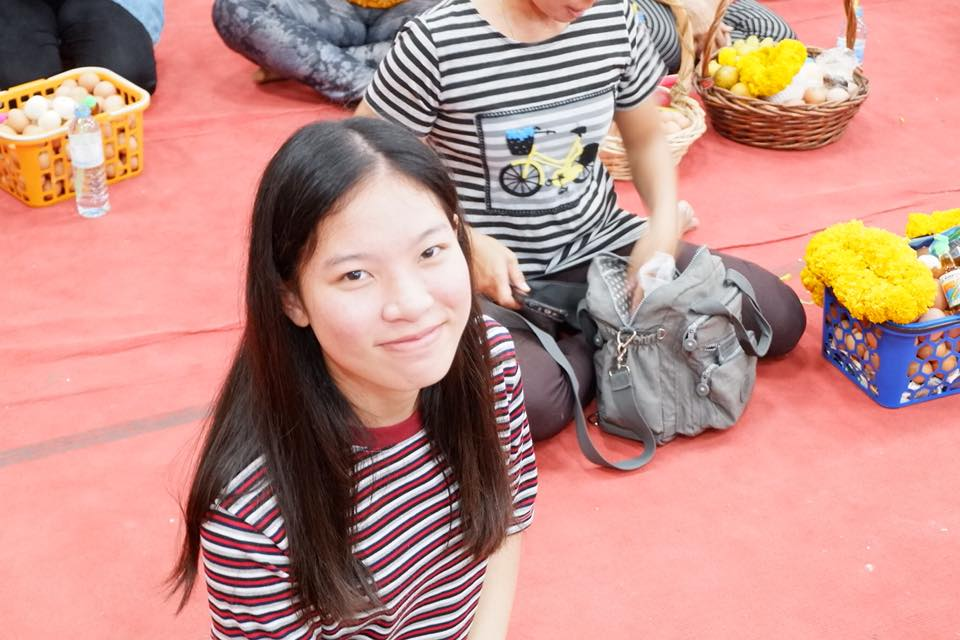
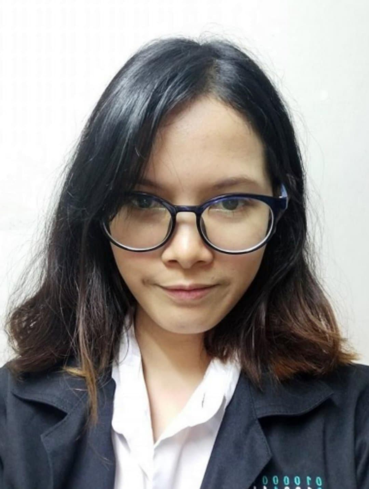

♥ ซัน ♦อายุ : 20 ปี ♦จังหวัดบ้านเกิด : กรุงเทพมหานคร ♦สายพันธุ์ : มนุษย์ ♦ซันเป็นเพื่อนชายคนแรกตั้งแต่เรียน ปี 1 เป็นบุคคลที่ค่อนข้างเก่งและหัวไว เวลามีปัญหา เรียนไม่เข้าใจเนื้อหา ก็สามารถปรึกษาเขาได้เสมอ เขาชอบอนิเมะและเกมมากๆ
 ♥ มด ♦ อายุ : 20 ปี ♦จังหวัดบ้านเกิด : สระแก้ว ♦สายพันธุ์ : มนุษย์ ♦เป็นคนตั้งใจเรียนและมุ่งมั่นกับการประหยัดเงิน ชอบอ่านนิยายหลายเล่มภายใน 1 วัน และขยันเข้าเรียนหนังสือตลอด บางครั้งถ้าเธฮติดเกมหรือนิยายจนไม่ได้นอน เธอก็จะตื่นไปเรียนไหมไหว เรียกได้ว่า ทิ้งให้เพื่อนนั่งเรียนเหงาๆเลย
 ♥ ปิง ♦อายุ : 21 ปี ♦จังหวัดบ้านเกิด : นครศรีธรรมราช ♦สายพันธุ์ : มนุษย์ ♦ชอบไปไหนมาไหนด้วยกันบ่อยๆก่อนจะมาพบมด ชวนกันไปกิน ไปเที่ยวเล่นหลังเลิกเรียนเป็นประจำ และเป็นคนที่ชอบหาคลิปวีดีโอแปลกๆมาให้คนในกลุ่มดู แถมเลียนแบบตามวีดีโอจนเพื่อนๆขำไปด้วย
♥ ย่อน ♦อายุ : 2 เดือน ♦จังหวัดบ้านเกิด : กรุงเทพมหานคร ♦สายพันธุ์ : หนู (วินเทอร์ไวท์) ♦สมาชิกใหม่ในหอพัก ขี้เล่นซุกซน ไม่กัด และกินจุเอาเรื่อง ถึงจะราคาไม่กี่บาทแต่ก็ดีต่อใจเป็นล้านล้านเท่า ♥น่ารัก~~~~
Lessons
CSSZenGardian
Random